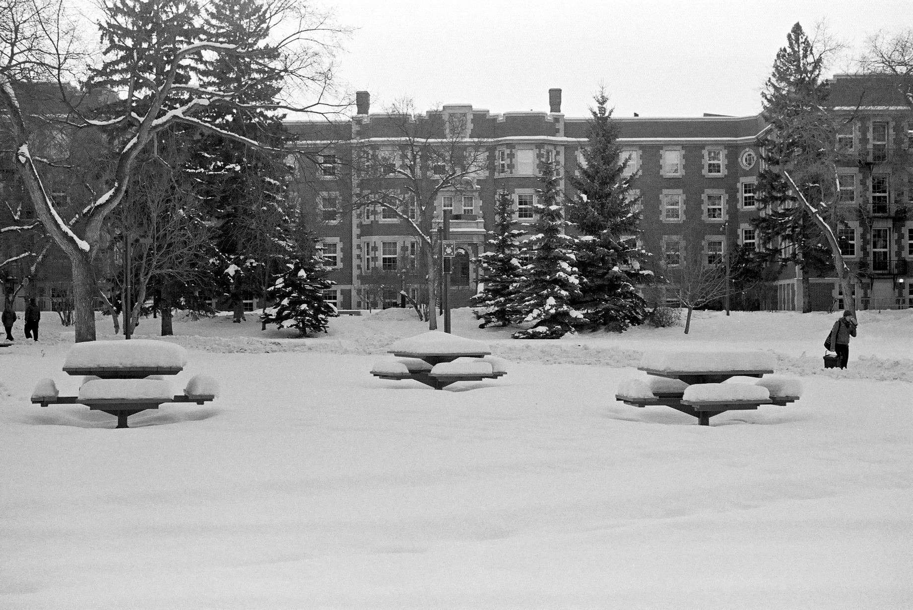

Tsung-Ying Chen National Tsing Hua University
我是陳宗穎，目前是台灣國立清華大學外國語文學系的助理教授。我的研究興趣包含了理論與實驗音韻學、語言習得、以及網路語言學研究方法。在教學的部份我的授課範圍涵蓋了大一英文、雙語網頁設計、音韻學和語言與R統計。我同時也提供研究所的課程，像是內隱與外顯語言學習以及網路語言學習與教學工具設計。
在得到清大的教職之前，我花了四年半在加拿大西部亞伯達省的首都艾德蒙頓完成亞伯達大學的博士學位。這個部份帶著非常獨特的經驗，而成為了我人生中很珍貴的回憶。艾德蒙頓這個城市所在位置非常之北，所以在一年裡的一半時間，大約是從十一月初到四月下旬，都是深埋在雪中的狀態。每一年有一到兩個星期的均溫大約在攝氏-20至-30度之間。如果你在攝氏正20度就穿著保暖的外套的話，那這個地方大概不是你計畫旅程的首選了吧。正是因為在冬天沒有太多視覺刺激，你更會愛上那短暫之秋。在這段時間中，你的仰望被令人屏息的金黃色楓葉所籠罩…大約三個星期。
許多人跟我說我應該在加拿大的時候學會怎麼溜冰。但不幸的是，我在加拿大大多數發展出來的技能都跟做語言學研究有關。嗯，至少這是我熱愛做的事呀。當你在路上遇到我的時候，不妨跟我打聲招呼，簡單聊聊。不管是加拿大還是語言學，話題隨你選囉！